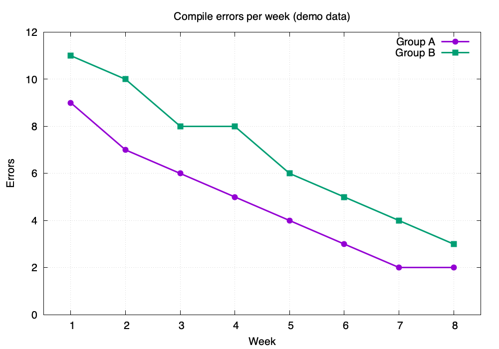

原稿 report-demo.tex（行號照原檔）
成品 PDF 第 1 頁（照實際畫面重畫）
改改看：
這幾行不會出現在紙上，它們在設定怎麼排。
每週編譯錯誤數的變化
1我想了解的問題
剛學 LaTeX 時，每次編譯都會遇到錯誤。練習八週之後，錯誤有沒有變少？下面用的是示範資料，不是真實量測。
（新加的圖）
圖 1: 新加的圖。
2一張圖
圖 1 是用 gnuplot 讀資料檔畫出來的。兩組的錯誤數都逐週下降。

圖 1: 每週編譯錯誤數（示範資料）。
3一張表
表 1 列出第 1、4、8 週的數字。表號和圖號一樣，由 LaTeX 自己編。
表 1: 三個時間點的編譯錯誤數（示範資料）。
| 週次 | A 組 | B 組 |
|---|---|---|
| 1 | 9 | 11 |
| 4 | 5 | 8 |
| 8 | 2 | 3 |
4一篇文獻
有人帶著練習，是不是比自己摸索有效？Su 等人做過有對照組的訓練研究 [1]。引用之前要回原文核對題名、作者與年份。
參考文獻
[1]Hsin-Feng Su, Malcolm Koo, Wen-Li Lee, Huei-Chuan Sung, Ru-Ping Lee, and Wen-I Liu. A dementia care training using mobile e-learning with mentoring support for home care workers: a controlled study. BMC Geriatrics, 21(1), 2021.
1
說明卡
點左邊任何一段開始
也可以點右邊紙上的任何一塊，或用上方「下一段」一段一段看。
自己組一次
一段一段貼到 Overleaf，看它長出來
在 Overleaf 開一個 Blank project，編譯器先換成 XeLaTeX（左下角齒輪 Settings → Compiler），把 figure-demo.png 和 refs.bib 上傳進去。然後照順序做：每按一次「複製」，貼到指定的位置，按 Recompile，看右邊多了什麼。
想一次貼完就用這顆。